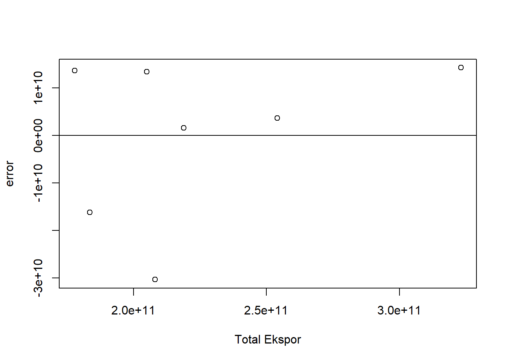
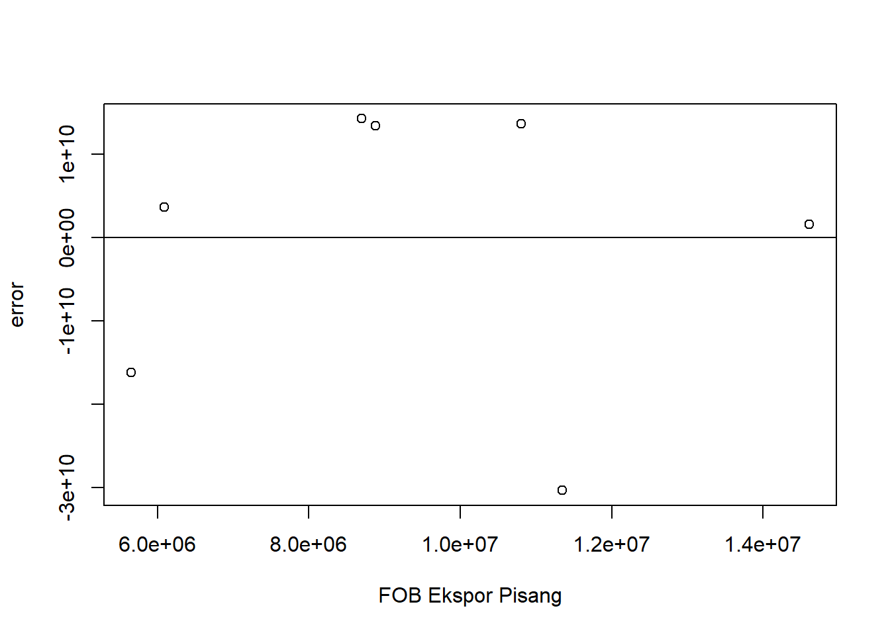
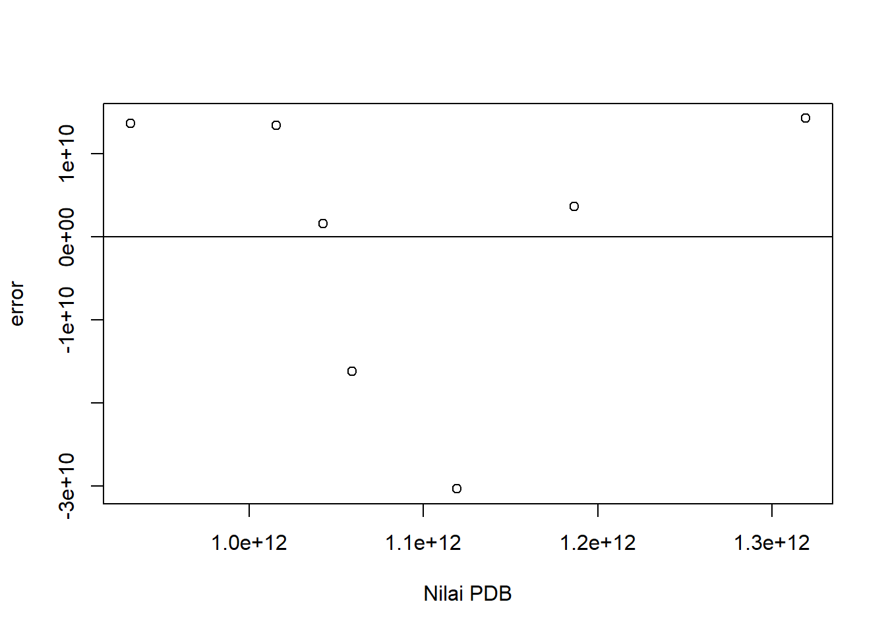

setwd("D:/METOPEL UAS/MANDA METOPEL")
library(readxl)
library(tidyverse)
library(kableExtra)Analisis Pengaruh Komoditas Pisang Terhadap Kinerja Ekspor Keseluruhan Indonesia.
Metode Penelitian Politeknik APP Jakarta

1 Pendahuluan
1.1 Latar belakang
Pisang merupakan salah satu komoditas pertanian utama di Indonesia, dengan produksi mencapai lebih dari 8 juta ton pada tahun 2020. Negara ini dikenal sebagai salah satu pusat keanekaragaman genetik pisang, dengan ratusan jenis pisang yang tumbuh dari Sabang sampai Merauke. Keunggulan pisang Indonesia terletak pada variasi jenisnya, cita rasa yang enak, mudah dicerna, dan banyak manfaat. Meski demikian, potensi pisang Indonesia belum sepenuhnya dimanfaatkan, terutama dalam hal ekspor.
Berdasarkan data dari Badan Pusat Statistik (BPS), volume ekspor pisang Indonesia pada tahun 2018 mencapai 30.372.955 kg, meningkat dari 18.176.619 kg pada tahun 2017. Nilai ekspor pisang pada tahun 2018 juga meningkat 64,74% menjadi US$14.609.697. Meski demikian, kinerja ekspor pisang Indonesia masih belum optimal. Sebagai contoh, meskipun produksi pisang Indonesia jauh melampaui Filipina, Indonesia masih jauh di belakang Filipina dalam hal ekspor pisang ke perdagangan dunia.
Penelitian ini bertujuan untuk melakukan analisis mendalam terhadap komoditas pisang di Indonesia, mengevaluasi keunggulan pisang Indonesia, dan menilai kinerja ekspor pisang Indonesia. Diharapkan, hasil penelitian ini dapat memberikan rekomendasi strategis untuk meningkatkan nilai ekonomi pisang di Indonesia dan memperkuat posisi Indonesia sebagai pemain utama dalam pasar pisang global.
1.2 Ruang lingkup
Ruang lingkup penelitian ini melibatkan analisis terhadap Nilai Produk Domestik Bruto (PDB) Indonesia, Nilai Ekspor Pisang Indonesia, dan total nilai keseluruhan ekspor Indonesia. Analisis ini akan dilakukan dengan menggunakan metode regresi linear multivariat.
Dalam penelitian ini, variabel respon yang menjadi fokus adalah total nilai ekspor keseluruhan Indonesia. Variabel ini akan dianalisis untuk melihat bagaimana pengaruh variabel prediktor terhadapnya. Variabel prediktor dalam penelitian ini adalah Nilai PDB Indonesia dan Nilai Ekspor Pisang Indonesia. Nilai PDB Indonesia diharapkan mempengaruhi total nilai ekspor Indonesia karena PDB merupakan indikator penting yang mencerminkan kondisi ekonomi suatu negara. Sementara itu, Nilai Ekspor Pisang Indonesia diharapkan juga mempengaruhi total nilai ekspor mengingat pisang merupakan salah satu komoditas unggulan ekspor Indonesia.
Dengan menggunakan metode regresi multivariat, penelitian ini diharapkan dapat mengetahui sejauh mana variabel prediktor (Nilai PDB Indonesia dan Nilai Ekspor Pisang Indonesia) mempengaruhi variabel respon (total nilai ekspor keseluruhan Indonesia). Hasil dari penelitian ini diharapkan dapat memberikan wawasan yang lebih dalam tentang dinamika ekonomi Indonesia, khususnya dalam konteks PDB, ekspor pisang, dan total ekspor. Selain itu, hasil penelitian ini juga dapat digunakan sebagai dasar untuk pengambilan keputusan dan perumusan kebijakan yang lebih tepat dan efektif.
1.3 Rumusan masalah
Berikut adalah rumusan masalah berdasarkan ruang lingkup penelitian yang telah dibuat:
Bagaimana pengaruh Nilai Produk Domestik Bruto (PDB) Indonesia terhadap total nilai ekspor keseluruhan Indonesia?
Bagaimana pengaruh Nilai Ekspor Pisang Indonesia terhadap total nilai ekspor keseluruhan Indonesia?
Apakah ada hubungan yang signifikan antara Nilai PDB Indonesia dan Nilai Ekspor Pisang Indonesia terhadap total nilai ekspor keseluruhan Indonesia?
Bagaimana model regresi linear multivariat yang paling tepat untuk menggambarkan hubungan antara Nilai PDB Indonesia dan Nilai Ekspor Pisang Indonesia dengan total nilai ekspor keseluruhan Indonesia?
Rumusan masalah ini akan menjadi dasar dalam melakukan analisis dan interpretasi data dalam penelitian. Selanjutnya, hasil dari penelitian ini diharapkan dapat memberikan rekomendasi yang tepat dan efektif untuk meningkatkan kinerja ekspor Indonesia.
1.4 Tujuan dan manfaat penelitian
Menganalisis pengaruh Nilai Produk Domestik Bruto (PDB) Indonesia dan Nilai Ekspor Pisang Indonesia terhadap total nilai ekspor keseluruhan Indonesia menggunakan metode regresi linear multivariat.
Membangun model regresi linear multivariat yang paling tepat untuk menggambarkan hubungan antara Nilai PDB Indonesia dan Nilai Ekspor Pisang Indonesia dengan total nilai ekspor keseluruhan Indonesia.
Menyelesaikan tugas mata kuliah Metodologi Penelitian sebagai pengganti Ujian Akhir Semester (UAS).
Penelitian ini sangat bermanfaat bagi saya sebagai mahasiswa, diantaranya:
Pemahaman Konsep: Penelitian ini membantu saya memahami dan menerapkan konsep-konsep dalam Metodologi Penelitian, khususnya dalam penggunaan metode regresi linear multivariat.
Keterampilan Analisis: Melalui penelitian ini, saya mendapatkan pengalaman praktis dalam melakukan analisis data ekonomi dan ekspor, yang akan berguna dalam karir saya di masa depan.
Penyelesaian Tugas: Penelitian ini juga membantu saya dalam menyelesaikan tugas mata kuliah Metodologi Penelitian sebagai pengganti UAS, sehingga membantu saya dalam menyelesaikan studi saya.
Kontribusi Ilmiah: Hasil penelitian ini dapat menjadi kontribusi ilmiah bagi saya dan dapat digunakan sebagai referensi untuk penelitian selanjutnya.
Pengembangan Karir: Penelitian ini juga dapat membantu saya dalam mengembangkan portofolio akademik saya, yang dapat berguna dalam proses aplikasi kerja atau studi lanjutan.
1.5 Package
2 Studi pustaka
Pertumbuhan ekonomi dapat didefinisikan sebagai: perkembangan kegiatan dalam perekonomian yang menyebabkan barang dan jasa yang diproduksikan dalam masyarakat bertambah (Sukirno, Sadano 2004).
Menurut Bambang Heru (2010), tingkat pertumbuhan ekonomi merupakan indikator kinerja makro yang sangat populer, dan dalam hitungannya merupakan derivasi dari PDB (produk domestik bruto) atau GDP (gross domestic product). Pendapat ini sejalan dengan Mankiw (2003) dalam analisis makro pengukuran dalam perekonomian suatu negara adalah PDB.
Menurut Nopirin (2008), perhitungan PDB dapat dilakukan dengan menggunakan tiga (3) pendekatan: pendekatan produksi, pedekatan pendapatan, dan pendekatan pengeluaran. PDB dengan pendekatan produksi adalah menjumlahkan nilai tambah barang atau jasa yang dihasilkan dari sembilan (9) unit produksi seperti: (1) pertanian, peternakan, kehutanan dan perikanan, (2) pertambangan dan penggalian, (3) industri pengolahan, (4) listrik, gas dan air bersih, (5) Konstruksi, (6) perdagangan, hotel dan restoran, (7) pengangkutan dan komunikasi, (8) keuangan, real estate dan jasa perusahaan, (9) jasa-jasa (termasuk jasa pemerintah).
Ekspor menurut keputusan mentri perindustrian dan perdagangan Nomor 182/MPP/Kep/4/1998 ketentuan umum di Bidang Ekspor, menyatakan bahwa ekspor merupakan kegiatan mengeluarkan barang dan jasa dari daerah pabean suatu negara. Adapun daerah pabean di definisikan sebagai wilayah Republik Indonesia yang meliputi wilayah darat, perairan dan ruang udara di atasnya, serta tempat-tempat tertentu di zona ekonomi eksklusif dan landas kontinen yang di dalamnya berlaku undang undang No.10 tahun 1995 tentang Kepabean.
Menurut definisi lain, ekspor merupakan penjualan barang dan jasa secara luas dari dalam negeri ke luar negeri (Mankiw, 2006).
Sedangkan menurut Priadi (2000) kegiatan ekspor merupakan sistem perdagangan yang dilakukan dengan cara mengeluarkan barang-barang dari dalam negeri ke luar negeri berdasarkan ketentuan yang berlaku.
Dikaji dari sisi manfaat, Menurut Sukirno (2010), manfaat dari kegiatan ekspor adalah : 1. Memperluas Pasar bagi Produk Indonesia ke luar negeri. 2. Menambah Devisa Negara 3. Memperluas Lapangan Kerja
3 Metode penelitian
3.1 Data
| tahun | PDB | pisang | ekspor |
|---|---|---|---|
| 2016 | $ 931.877.364.037,70 | $ 10.806.000,00 | $ 177.886.012.743,86 |
| 2017 | $ 1.015.618.744.159,73 | $ 8.878.000,00 | $ 204.924.485.909,91 |
| 2018 | $ 1.042.271.532.988,63 | $ 14.610.000,00 | $ 218.905.647.884,81 |
| 2019 | $ 1.119.099.871.350,20 | $ 11.344.000,00 | $ 208.057.763.662,38 |
| 2020 | $ 1.059.054.842.698,48 | $ 5.650.000,00 | $ 183.546.577.015,85 |
| 2021 | $ 1.186.505.455.736,54 | $ 6.090.000,00 | $ 254.008.548.673,18 |
| 2022 | $ 1.319.100.220.407,72 | $ 8.697.000,00 | $ 323.079.953.659,96 |
Penelitian ini menggunakan data time series yang kemudian diproses menggunakan metode regresi multivariat untuk melihat hubungan antar variabel dengan S di salah satu variabel prediktor.
3.2 Metode analisis
Metode yang dipilih adalah regresi Multivariat dengan lebih dari satu, yakni 1 variabel respon dan 2 variabel prediktor, dimana variabel respon disini berperan sebagai variabel dependent dan 2 variabel prediktor berperan sebagai variabel independent.
Spesifikasi yang dilakukan adalah:
\[ Y=\beta_0 + \beta_1 X+\beta_2 S+\mu_. \] di mana \(Y\)=Nilai Total Ekspor , \(X\) = FOB Ekspor Pisang dan \(S\)= PDB.
4 Pembahasan
4.1 Pembahasan masalah
Pada bagian ini dapat ditampilkan data dan visualisasi data yang telah dikumpulkan.
#impor dataset
read_excel("pisang.xlsx")# A tibble: 7 × 6
Tahun X S CPI HA Y
<dbl> <dbl> <dbl> <dbl> <dbl> <dbl>
1 2016 52.6 13436 93.3 243836 145189416000
2 2017 79.4 13548 96.9 253876 120279144000
3 2018 278. 14481 100. 263876 211567410000
4 2019 51.7 13901 104. 255890. 157692944000
5 2020 45.4 14105 106. 232439 79693250000
6 2021 322. 14269 107. 309874 86898210000
7 2022 76.9 15737 112. 368520 136864689000dat <- read_excel("pisang1.xlsx")
kbl(dat) %>%
kable_styling(bootstrap_options = c("striped", "hover", "condensed", "responsive"))| tahun | PDB | pisang | ekspor |
|---|---|---|---|
| 2016 | 9.318774e+11 | 10806000 | 177886012744 |
| 2017 | 1.015619e+12 | 8878000 | 204924485910 |
| 2018 | 1.042272e+12 | 14610000 | 218905647885 |
| 2019 | 1.119100e+12 | 11344000 | 208057763662 |
| 2020 | 1.059055e+12 | 5650000 | 183546577016 |
| 2021 | 1.186505e+12 | 6090000 | 254008548673 |
| 2022 | 1.319100e+12 | 8697000 | 323079953660 |
reg1<-lm(ekspor~pisang+PDB,data=dat)dat$m<-resid(reg1)
plot(dat$ekspor,dat$m,xlab="Total Ekspor",ylab="error")
abline(h=0) # membuat garis horizontal di y=0
dat$m<-resid(reg1)
plot(dat$pisang,dat$m,xlab="FOB Ekspor Pisang",ylab="error")
abline(h=0)
dat$m<-resid(reg1)
plot(dat$PDB,dat$m,xlab="Nilai PDB",ylab="error")
abline(h=0)
4.2 Analisis masalah
Hasil regresinya adalah
reg1<-lm(data=dat,ekspor~pisang+PDB) #Y~X+S
summary(reg1)
Call:
lm(formula = ekspor ~ pisang + PDB, data = dat)
Residuals:
1 2 3 4 5 6 7
1.365e+10 1.338e+10 1.566e+09 -3.030e+10 -1.616e+10 3.645e+09 1.422e+10
Coefficients:
Estimate Std. Error t value Pr(>|t|)
(Intercept) -2.266e+11 9.075e+10 -2.497 0.06698 .
pisang 2.695e+03 2.885e+03 0.934 0.40307
PDB 3.882e-01 7.126e-02 5.447 0.00552 **
---
Signif. codes: 0 '***' 0.001 '**' 0.01 '*' 0.05 '.' 0.1 ' ' 1
Residual standard error: 2.099e+10 on 4 degrees of freedom
Multiple R-squared: 0.8835, Adjusted R-squared: 0.8252
F-statistic: 15.16 on 2 and 4 DF, p-value: 0.01358Dari hasil regresi yang di tampilkan, dimana R-squared menunjukan hasil 0.8835, yang artinya angka tersebut mengandung makna bahwa X1 dan S secara simultan berpengaruh terhadap Y sebesar 88,35%. Sedangkan sisanya dipengaruhi oleh variabel lain di luar persamaan ini.
Kemudian, besaran nilai yang tertera pada FOB ekspor Pisang, dapat diartikan sebagai setiap kenaikan nilai ekspor pisang sebesar 1 USD akan meningkatkan total nilai ekspor Indonesia sebesar 2,695 USD positif tidak signifikan.
Terakhir pada variabel PDB, juga menunjukan hasil positif dan kali ini signifikan, dimana setiap kenaikan PDB sebesar 1USD akan mengakibatkan total nilai ekspor Indonesia juga naik sebesar 3,882 USD.
5 Kesimpulan
Kesimpulan dari analisis ini adalah pada dasarnya ekspor komoditas apapun di Indonesia akan berpengaruh positif dalam meningkatkan total nilai ekspor di Indonesia, sama halnya dengan komoditas pisang yang menjadi bahasan dalam penelitian kali ini.
Dan untuk PDB sendiri, dimana sebelumnya di jelaskan bahwa ekspor menjadi salah satu indikator yang mengukur tingkat pertumbuhan PDB suatu negara yang artinya antara ekspor dan PDB memiliki pengaruh satu sama lain dan jelas dalam analisis kali ini PDB memiliki dampak positif signifikan dalam melihat kinerja ekspor di Indonesia.
6 Referensi
Heru Bambang, (2010), Opini Media Indonesia 25 Maret 2010.
Badan Pusat Statistik (BPS) Republik Indonesia, 2022. Statistik Indonesia. Statistical Yearbook of Indonesia 2022.
Mankiw, N. Gregory. 2003. Teori Makro Ekonomi Terjemahan, PT. Gramedia Pustaka Utama, Jakarta.
Nopirin, Ph.D., 2008, Pengantar Ilmu Ekonomi Makro & Mikro, Edisi Pertama, BPFE: Yogyakarta.
Sukirno, Sadono. 2004. Makroekonomi Teori Pengantar. Jakarta: PT RajaGrafindo Persada
http://database.pertanian.go.id/eksim2012/hasilekspornegaratujuan.php.
http://www.fao.org/faostat/en/.
Pengantar Ekonomi Makro oleh Sadono Sukirno, Edisi Keempat (2023)
Ekonomi Makro oleh Sadono Sukirno dan Sadono Anwar, Edisi Ketiga (2022)
Ekonomi Makro oleh Mankiw, Gregory N., Edisi Keempat (2022)
ANALISIS KINERJA PERDAGANGAN PISANG. https://dispertan.kaltimprov.go.id/assets/file/file_1578626730.pdf.
Daya Saing Ekspor Pisang Indonesia di Negara Tujuan Ekspor Periode 2000 …. https://journal.ipb.ac.id/index.php/jagbi/article/view/36753.